El Arkanoid es un divertido que exige unos reflejos rápidos. Usa física, colisiones y efectos especiales para entretener al jugador.
Se moverá de izquierda a derecha y no podrá atravesar las paredes.
El Ball rebotará en el Paddle, los bloques y las tiles.
Los Bloques que cambiarán de color y harán un sonido cuando la bola colisione con ellas. Y si le damos una segunda vez se eliminara el bloque y puntuara.
El Escenario tendrá 2 capas. La 0 sera donde dibujaremos el borde con la tiles y el Background que pondremos el fondo que tenemos en el juego.
Siempre tiene que estar la capa 0 en la primera posición empezando por arriba, ya que es donde dibujaremos y añadiremos nuestras Entidades. Para poder hacerlo tiene que estar seleccionada la capa 0.
El juego consiste en que el Paddle se moverá con las flechas derecha e izquierda sin que sobrepase los bordes.
La pelota empezara a moverse cuando presionemos la tecla espacio e ira rebotando con el Paddle, Bloque y Tiles. Tendremos 3 pelotas disponibles
para poder jugar. Solo podra salir otra pelota cuando la anterior haya salido de la escena.
Los Bloques tendrán 2 vidas. La primera vez que le de la pelota cambiara de color y la segunda vez se eliminara el Bloque y puntuara.
El Juego terminara cuando ya no tengamos más vidas o cuando hallamos acabado con todos los bloques. Y pondremos una entidad de "Game Over" ó
"You Win".
Creamos un Escenario con la anchura y altura que ponga por defecto (El alumno la podra hacer más grande si quiere).
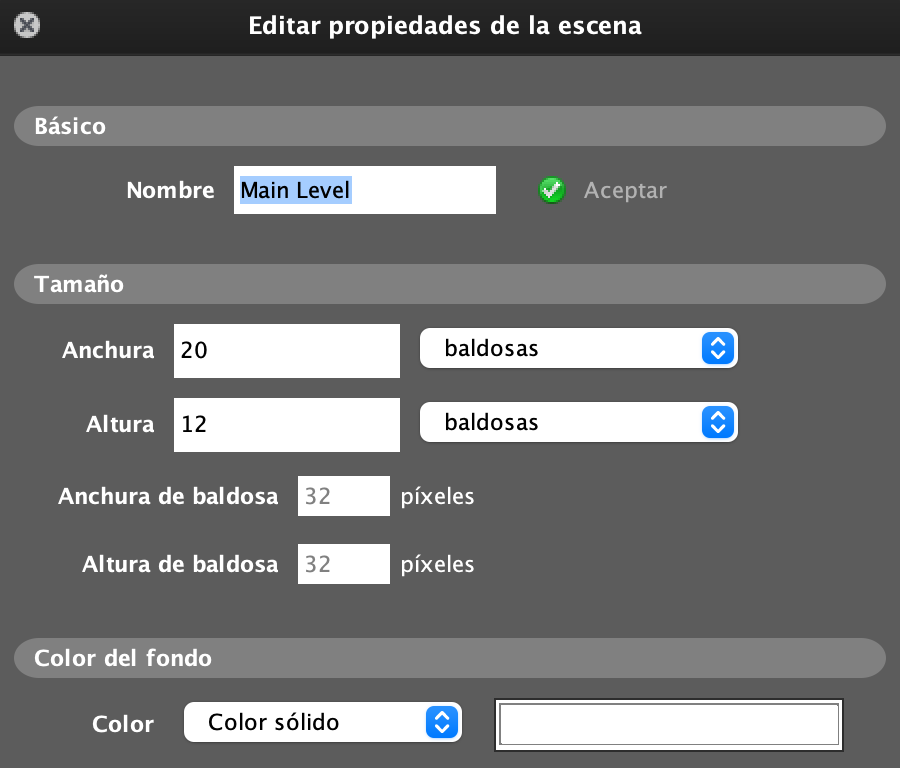
Lo primero que necesitamos son las Tiles y el Fondo (para poder ponerlas en el Escenario), asi que tendremos que añadir al proyecto dentro de Fondos y Set de baldosas.
Para añadir el Fondo damos a Biblioteca/Fondos y damos al botón.
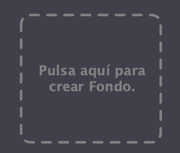
Tenemos que dar al botón que aparece en la izquierda de "Pulsa para añadir un fotograma".
Escala 1 y seleccionar la imagen "New bricks.png" en el directorio donde esten los Sprites, Sonidos...
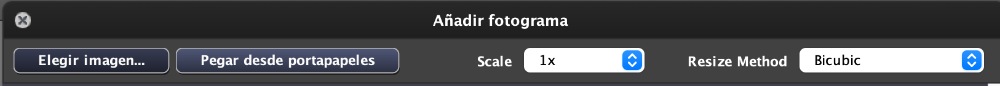
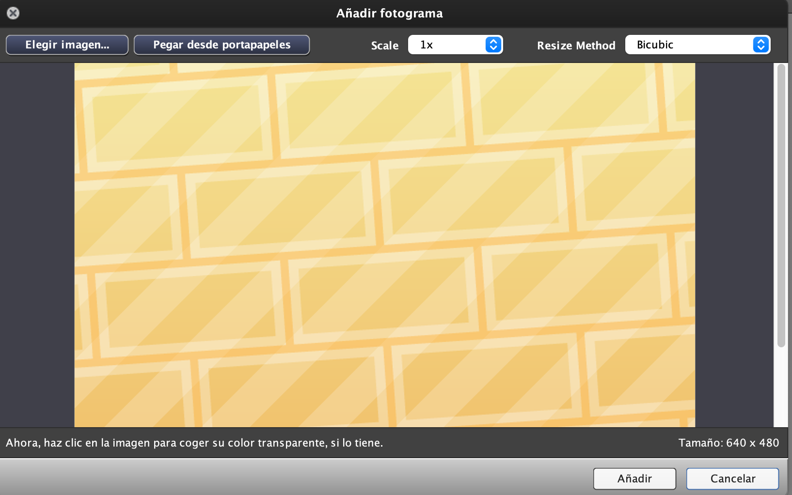
Nos faltaria añadir el Set de baldosas damos a Biblioteca/Set de baldosas y damos al botón.
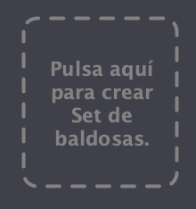
Le ponemos un nombre.
Escala 1 y seleccionar la imagen "Bricks.png" en el directorio donde esten los Sprites, Sonidos...
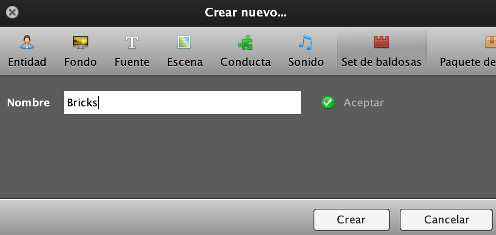
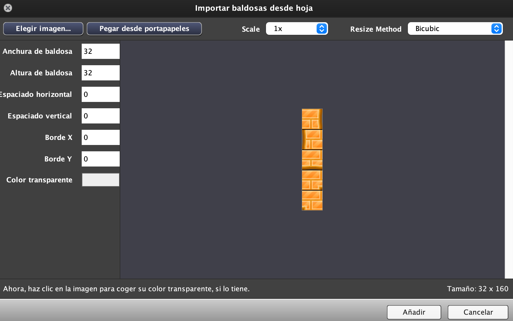
Una vez que tengamos el Fondo y la Baldosas ya podemos crear nuestro Escenario. Y colocamos la entidad Paddle.
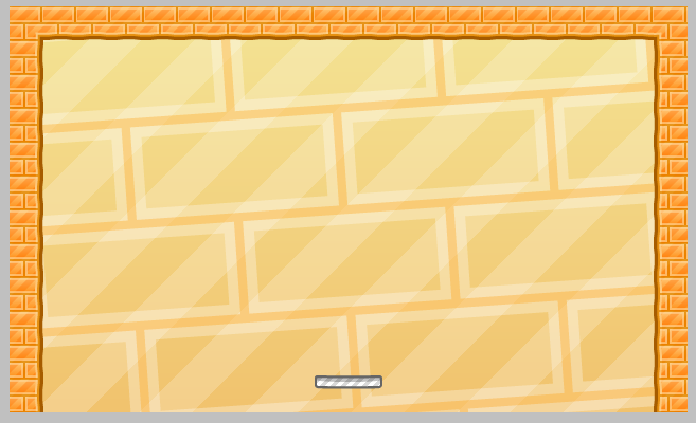
Para poder crear los Bloques lo haremos desde el Evento "Created" del Escenario.
- Necesitamos varios Atributos (serán locales): Puntos, PosicionX, PosicionX Inicial, PosicionY y Repetir (todos son de tipo númerico)
- También tenemos que crear unos Atributos del juego: Esperar y Juego Terminado (ambos Booleanos inicializados a Falso), numero bloques, numero bloques
eliminados, Vidas (de tipo númerico)
- Al comienzo del juego inicializar numero bloques, numero bloques eliminados y Puntos a 0. Y Vidas a 3.
- Los podemos crear de muchas maneras una de ellas es utilizando el repetir y mandando un Custom Event que es que crea el Bloque, inicializando
las variables de Puntos, Repetir, PosicionX, PosicionY, PosicionX Inicial (por cada fila) y sumando al numero de bloques los bloques que creamos.
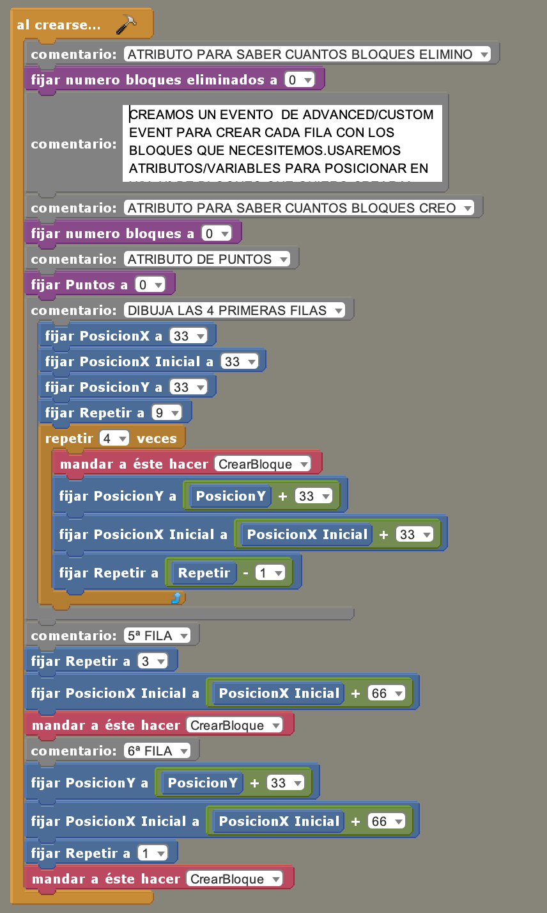
Recordar que tenemos que agregar la entidad de "Green Block" antes de poder hacer algo con ella. Escala 1 y seleccionar la imagen "Green Block.png".
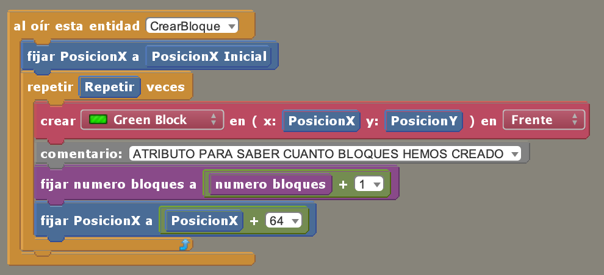
Quedaría algo como esto:
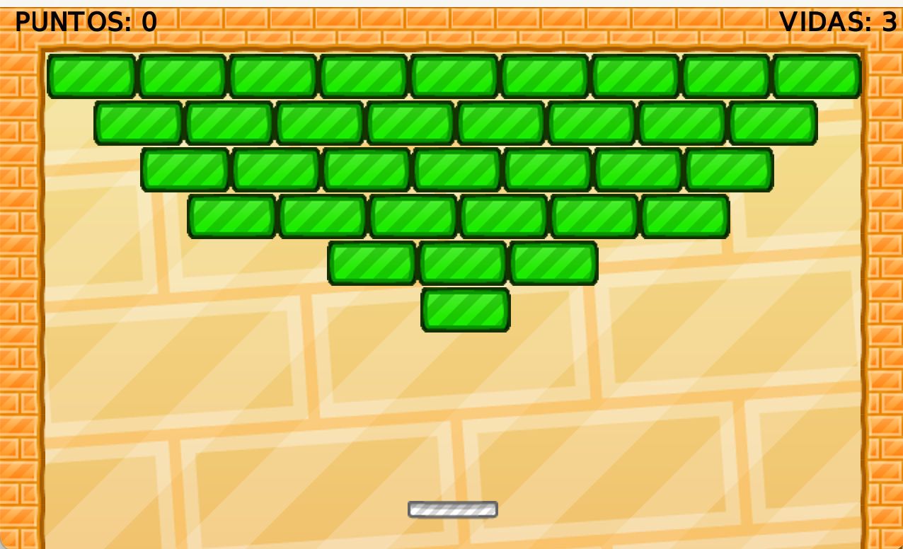
Crearemos un grupo de Colision llamado "Bloques" que solo colisionara con el grupo de Colisión "Pelota" que lo tendrá asignado la pelota. Y se lo pondremos a la entidad "Green Block".
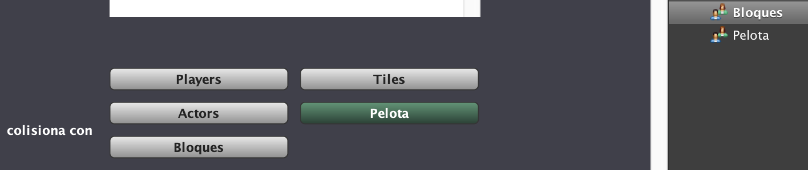
Añadir un nuevo Evento en el Escenario de "Actor Created" para que cuando se elimine una entidad que pertenezca al Grupo de los Bloques se sumen los Puntos.
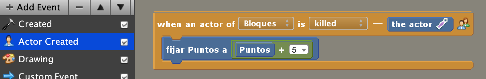
Y necesitamos otro Evento de Drawing para mostrar los Puntos y las Vidas pero con una fuente que creemos en Central del juego/Fuente.
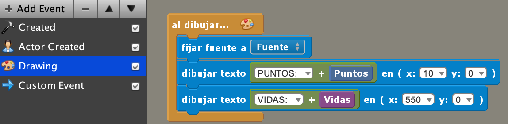
Faltaria hacer algo mñas en la entidad Geen Block pero lo veremos más adelante.
Para crear una entidad daremos al botón, le ponemos un nombre y daremos al botón de crear.
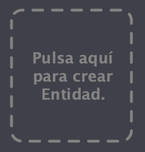
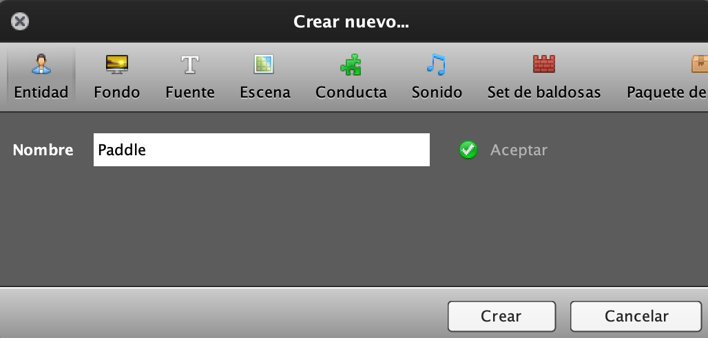
Nos aparece una ventana que nos dice que no tenemos animaciones, asi que le damos al botón para añadir una animación.
Pulsamos el botón para añadir un fotograma.
Escala 1 y seleccionar la imagen "Paddle.png". Le cambiamos el nombre de la animación (Siempre sin acentos).
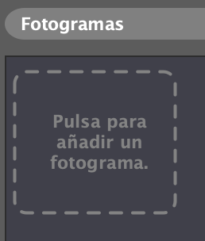
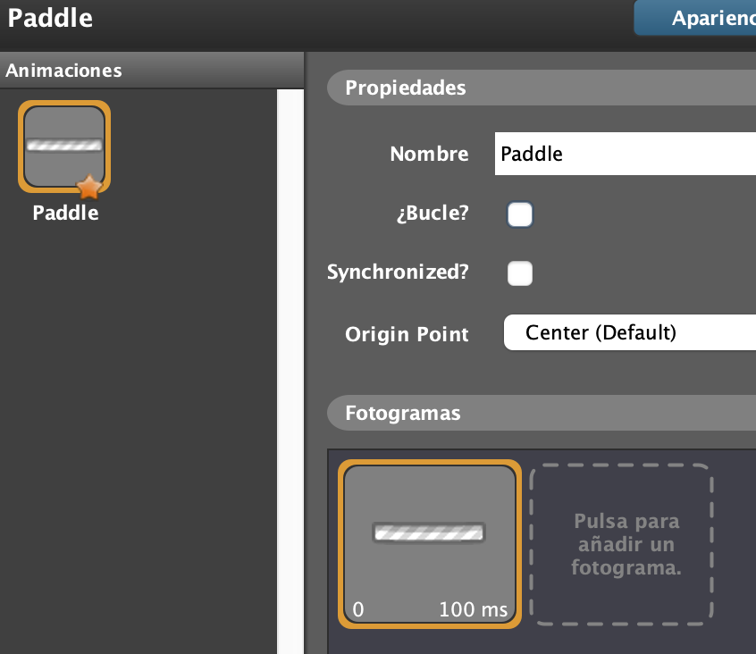
Ahora comenzaremos con la programación del Paddle.
Tendremos 2 Atributos del Juego (Globales), Vidas que será númerico y Juego Terminado que será un booleano (verdadero/falso).
Añadir un Evento Basics/When Updating para el movimiento.
- Si Vidas es 0 o Juego Terminado es verdadero ponemos el "x-speed" a 0 para que no se mueva.
- Y si Vidas es mayor que 0 hacemos que se mueva.
- Si le damos la tecla izquierda movemos x-speed en negativo.
- Si le damos la tecla derecha movemos x-speed en positivo.
- Y si no damos ni a la tecla derecha ni a la izquierda lo ponemos a 0 para que deje de moverse el Paddle.
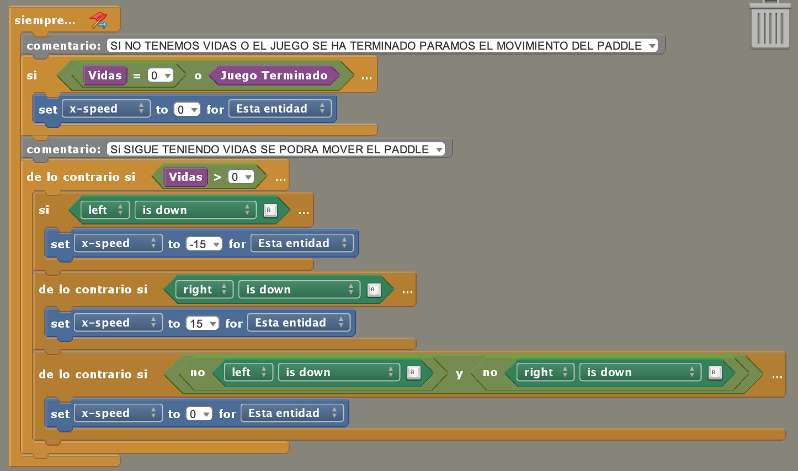
A la hora de poner bloques si no queremos ese bloque podemos arrastrarlo a la basura que esta arriba a la derecha ó podemos dar click derecho (aparecerán más opciones para hacer más cosas interesantes).
Añadir otro Evento Basics/When Updating para que el Paddle no sobrepase los lados.
- Si la posición X del Paddle es menor a la anchura del tile igualo su X a la anchura de la tile.
- Y si la posición X + su anchura es mayor que anchura de la escena menos la anchura del tile igual su X a anchura de la escena menos
la anchura del tile.
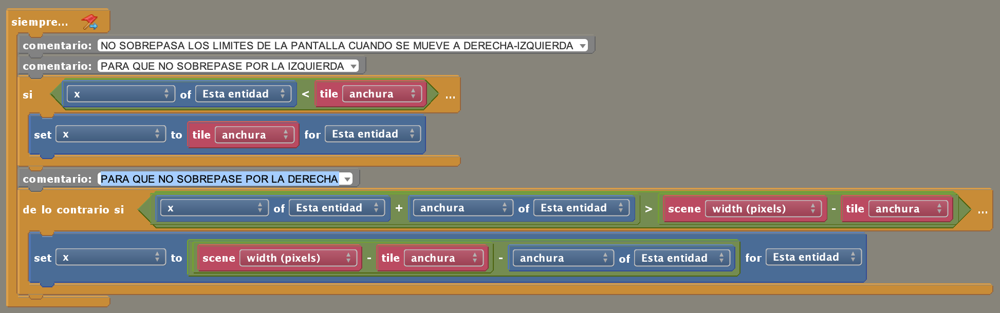
Pondremos su colisión.
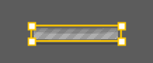
En la Fisica. No se puede empujar y no podrá rotar.
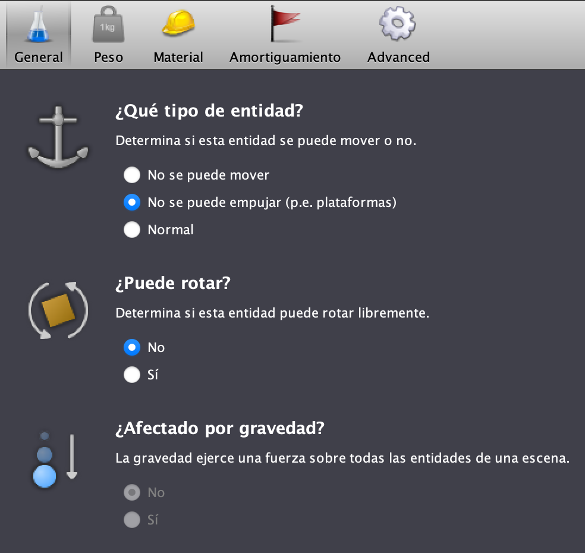
Y pondremos que pertenezca al grupo de los Players. Que en Settings/Grupos de colisión los Players colisionaran con la "Tiles" y con un grupo que creemos que sera "Pelota" que lo añadiremos a nuestra ball.
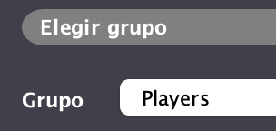
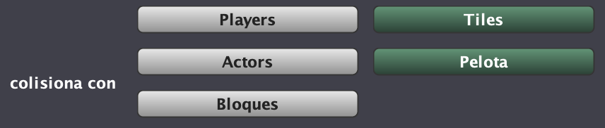
Nos faltaria crear una Conducta que se llame "Lanzar Pelota". Para ello vamos Central del juego/Conductas y como la vamos añadir a una entidad, la conducta será "Para entidades". Creamos la conducta y le ponemos su nombre.
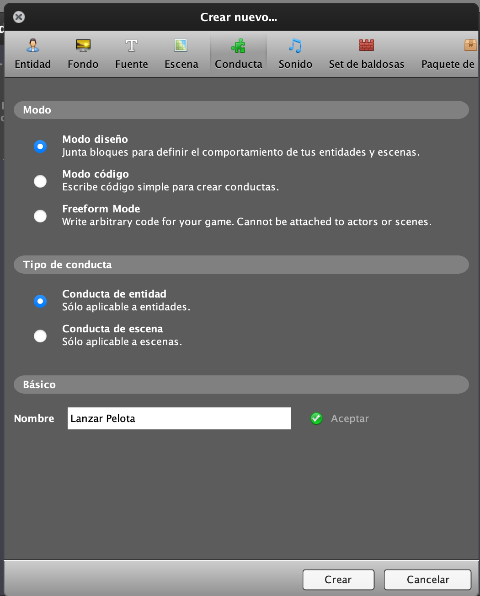
Las conductas las podemos exportar para poder utilizarla en otro proyecto e incluso podemos tener "Atributos" para poder pasar valores como: tipo de
entidades, ángulo....... En nuestro caso estas variables las tengo ocultas porque no las voy a necesitar.
Las podemos encontrar en la parte de la derecha de nuestra conducta. Paleta serán los bloques de programación, Atributos estarán los atributos que
queremos pasar por parámetro. Y en Favoritos podemos tener bloques favoritos asignados.
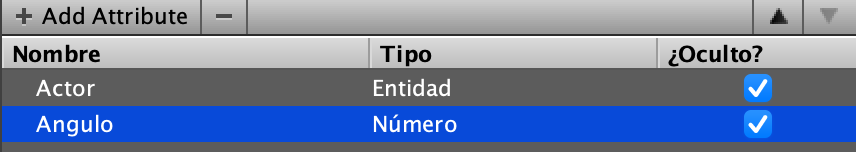
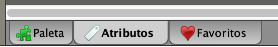
Una vez creada tenemos que añadir la Conducta "Lanzar Pelota" a la entidad "Paddle". Dentro de las Conductas del Paddle hay un botón que aparece a la abajo a la izquierda. Le damos y nos aparece otra ventana para seleccionar la conducta.
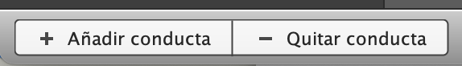
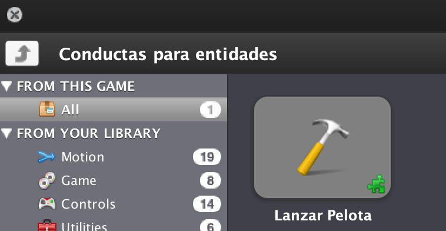
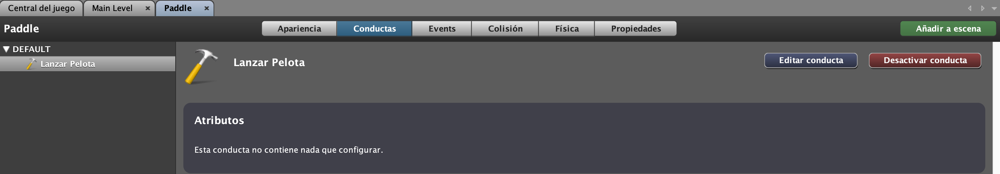
Ahora vamos a programar la conducta "Lanzar Pelota". Damos al botón de "Editar Conducta".
- Tenemos que agregar la entidad de "Ball". Escala 1 y seleccionar la imagen "Ball.png"
- La pelota se lanzara con el botón del Espacio. Para ello necesito crear en Setting/Controles una nueva tecla.
- Crear un nuevo evento Input/Universal/Keyboard y seleccionamos el botón nuevo que hemos creado.
- Usaremos el atributo Vidas para poder lanzar una nueva pelota y otro atributo Esperar que sera booleano que hasta que la pelota anterior no halla
desaparecido de la escena no pueda volver a lanzar otra pelota.
- Deje otro bloque pero no está enganchado para que si quieren podríamos hacer que tuvieramos varias pelotas a la vez.
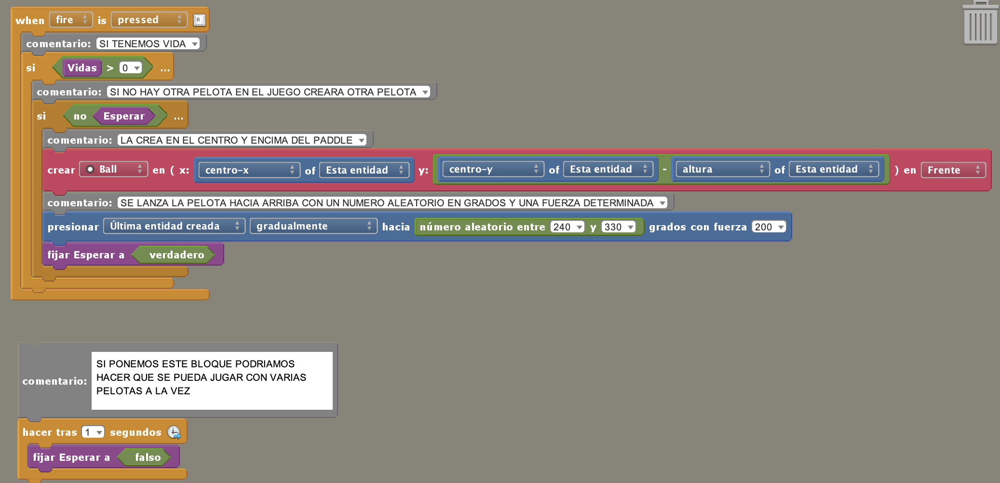
Los Bloques los creamos en el Evento Created de la Escena. Pero aún nos falta hacer algunas cosillas.
Tendrá 2 Eventos:
- Created para inicilizar el atributo "Tocar ladrillo" la inicializamos a 2 ya que solo se pueden tocar 2 veces y se eliminaran.
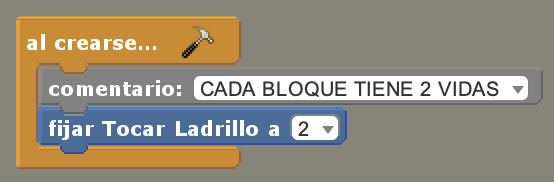
- Actor Type para si el bloque golpea a la pelota y si el atributo "Tocar ladrillo" es 2 cambia su color y reproducir el sonido.
- Y si le vuelve a dar reproducir el sonido, sumamos al atributo "numero bloques eliminados" y si ya no tenemos más bloques mostraremos
la entidad de "You Win". Asi que habra que crear una entidad de You Win pero con la Escala 4.
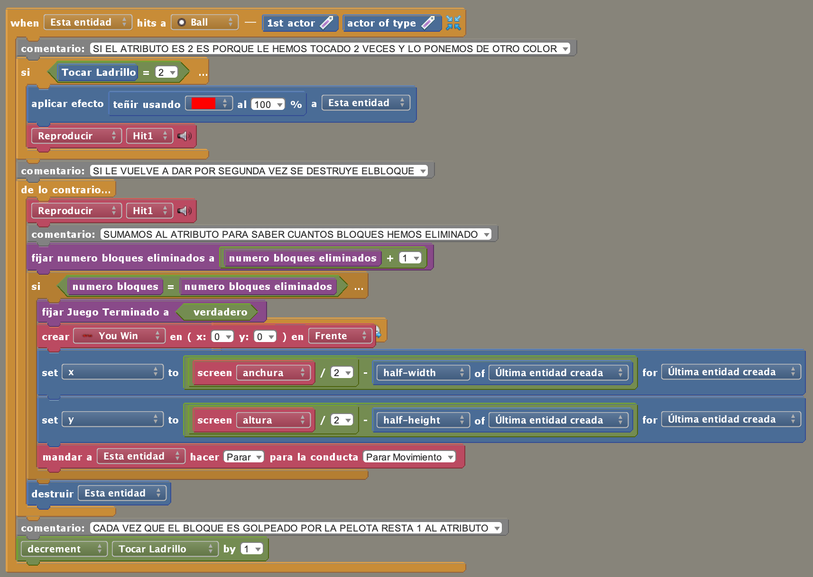
El Bloque también tendrá su colisión.
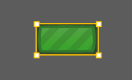
En la solapa de Física NO se podrá mover. El resto lo dejamos como está.
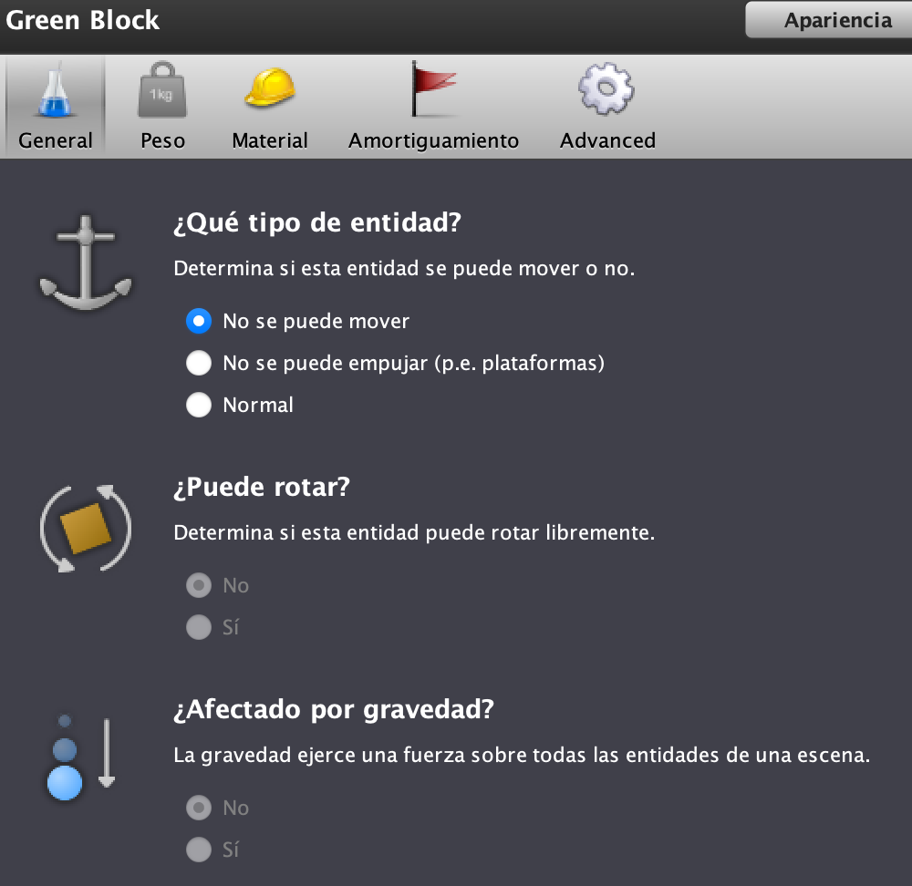
Y en Propiedades ponemos a que grupo de Colisión pertenece. Y en Grupos de Colisión pondremos con que grupo colisiona el Bloque.
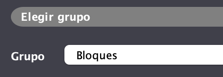
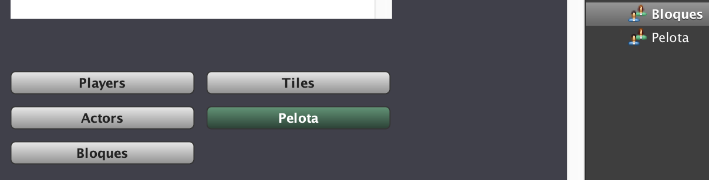
Crear una nueva entidad con Escala 1 y seleccionar la imagen "Ball.png". La Pelota tendrá dos Eventos:
- Updating que comprobara mediante un Atributo del juego si "Juego Terminado" y destruye la entidad para que no se quede rebotando si ha
terminado el juego.
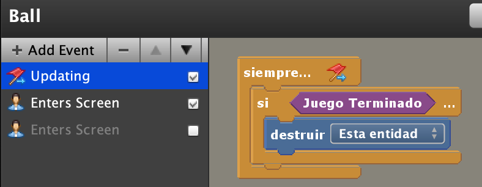
- El Evento que usaremos está en: Actors/Enters or Leaves the Scene or Screen/Actor of Type. Seleccionamos el ball y que se active cuando salga de
la Escena.
Le restaremos una vida y si es 0 centramos la entidad de "Game Over" que la pondremos con una Escala de 4.
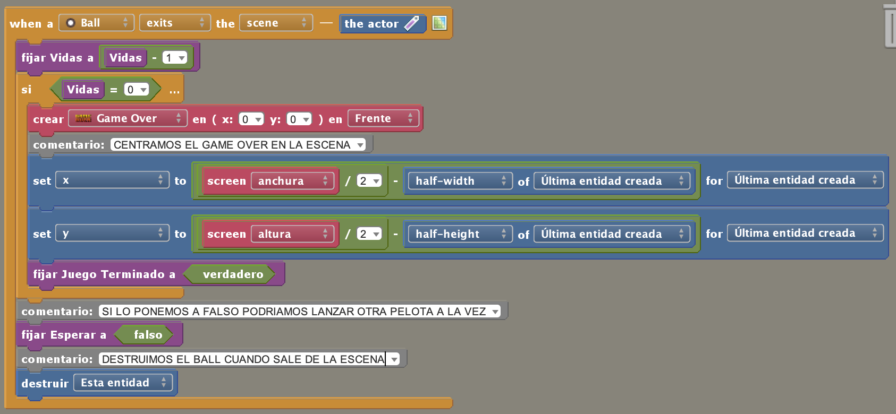
- He puesto otro Evento que no está activo. Lo que hace es volver a reiniciar la escena cuando ya no tenga vidas. (Por si quereis probarlo)
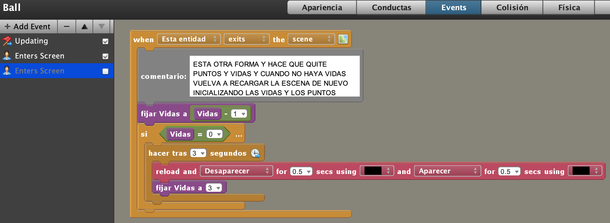
El Ball tiene que tener una colisión.
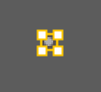
En la solapa de Física tenemos que dejar que se mueva, que no pueda rotar y que no tenga gravedad.
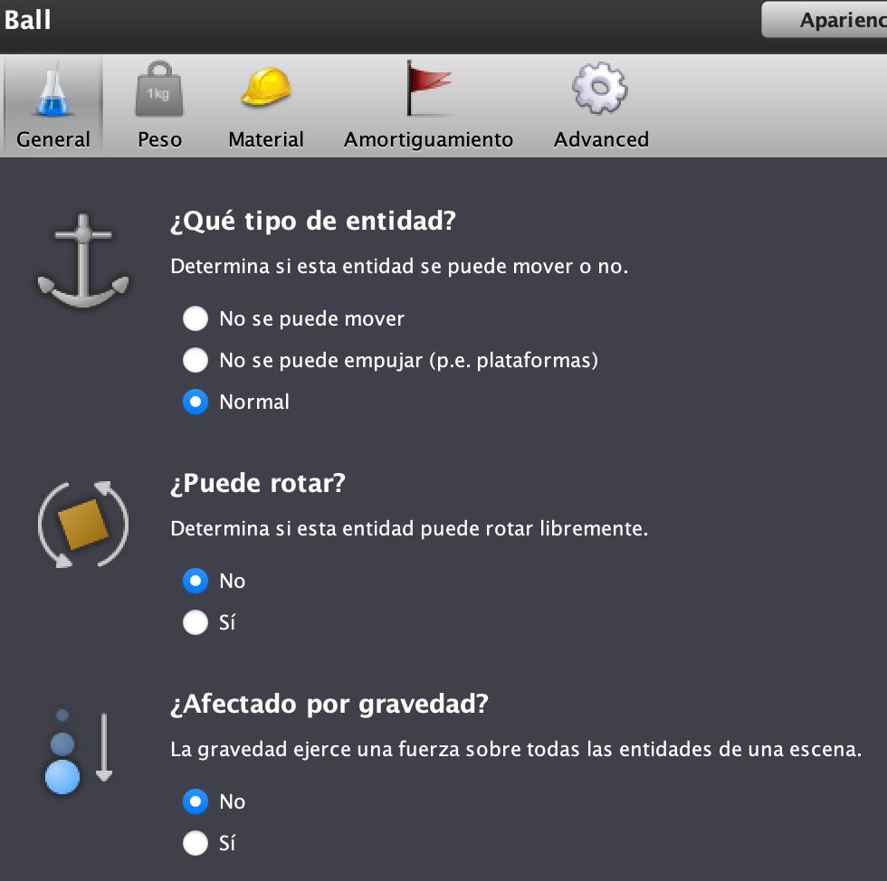
En la solapa de Peso.
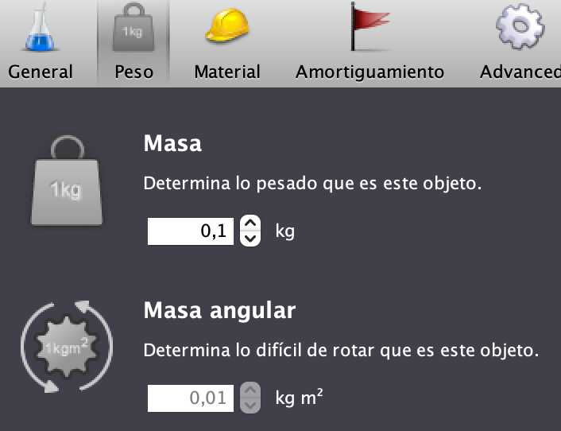
En la solapa de Material. La Elasticidad sera a 1 para que la pelota rebote.
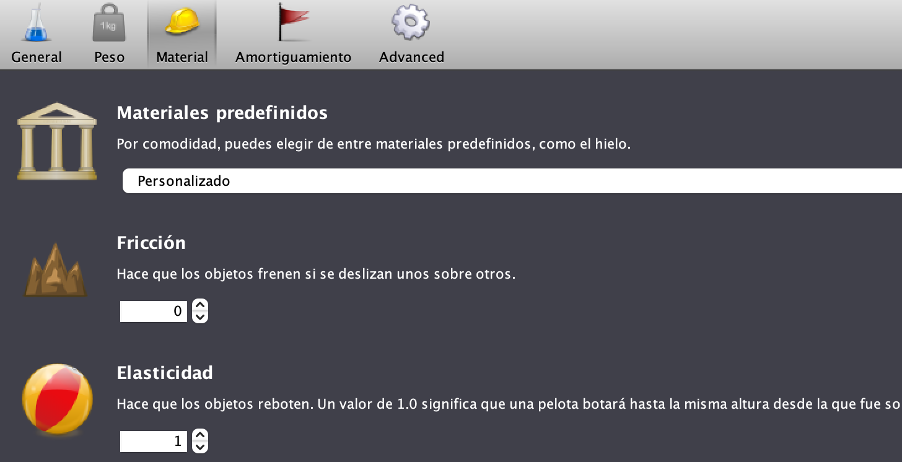
Y en Propiedades ponemos a que grupo de Colisión pertenece. Y en Grupos de Colisión pondremos con que grupo colisiona la Pelota.
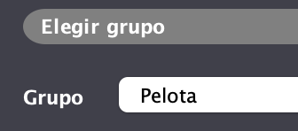
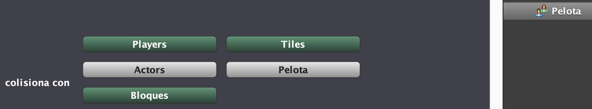
Tenemos que añadir el sonido del golpe de la pelota sobre los bloques. - Vamos a Sonidos y damos al botón.
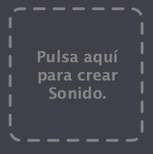
- Y damos de nuevo al botón de "Import MP3". Y seleccionamos el sonido "Hit.mp3". Para poder probarlo vamos donde pone Reproducción y le damos al botón..
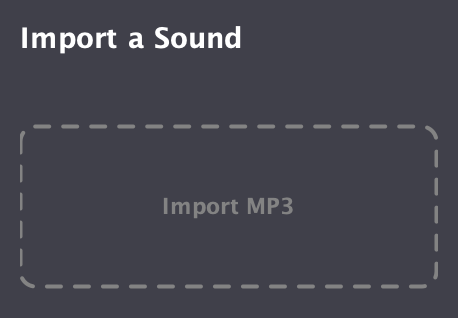
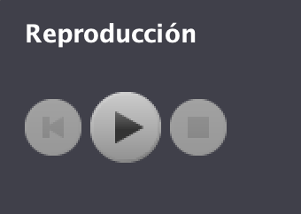